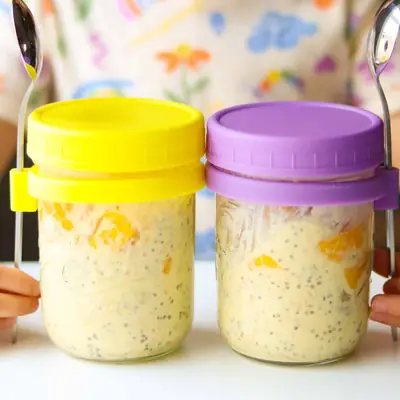

Mango Overnight Oats

Ingredients
- 1 cup (200g) fresh or frozen mangoes
- 12 ounce can full-fat unsweetened coconut milk
- 1/2 cup yogurt, plain or Greek-style
- 2 dates (optional)
- 1 teaspoon vanilla extract
- 2 cups rolled oats (1/2 cup per jar)
- 4 teaspoons chia seeds (1 teaspoon per jar)
Steps
- Make the mango coconut blend: In a blender, combine the mango, coconut milk, yogurt, dates, and vanilla. Blend until smooth and creamy.
- Assemble the jars: Place ½ cup rolled oats and 1 teaspoon chia seeds into each jar or container. Pour the mango coconut mixture evenly over the oats. Stir well to make sure everything’s combined. Let it sit for about 5 minutes then stir again.
- Chill overnight: Cover and refrigerate the jars for at least 4 hours or overnight. The oats and chia seeds will soak up all that tropical goodness and turn into a creamy, pudding-like texture.
- Serve and enjoy: Give the oats a good stir before eating. Add a splash of milk to loosen it up, if needed. You can top with more fresh mango, shredded coconut, or a sprinkle of granola if you want a little crunch!
Recipe by Min Kwon · Kidfriendly Meals, from MJ and Hungryman. Saved here for personal use; the original has the full notes, tips and photos. Open original